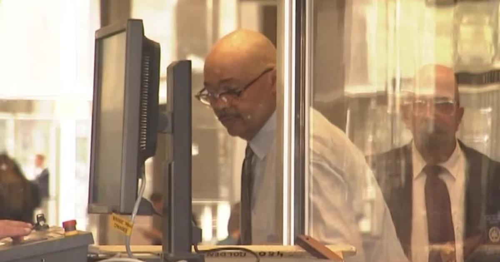

Companies linked to Mohammed Nuru bribes banned from receiving San Francisco contractsSAN FRANCISCO – Companies who bribed former San Francisco Public Works director Mohammed Nuru are barred from doing business with the city, City Attorney David Chiu announced Tuesday. The debarment prohibits Alan Valera and William Gilmartin -- president and vice president of civil engineering and construction firm ProVen Management Inc. -- from receiving city contracts. The two previously pled guilty to conspiracy to commit honest services wire fraud. Valera has been sentenced to two years in federal prison, and Gilmartin has yet to receive his sentence. According to an investigation by the FBI, ProVen provided Nuru expensive dinners and farming supplies for his ranch to win more public contracts. The company was vying to operate an asphalt plant on land owned by the Port of San Francisco, Chiu said. The San Francisco City Hall Public Works scandal surrounding Nuru's actions led to numerous convictions. The executives were two among others who attempted to bypass the city's competitive contracting process, as revealed by a federal investigation. Nuru pleaded guilty to fraud in 2021 and is . Other companies allegedly affiliated with the Nuru scandal that have also been debarred include Baylands Soil Processing LLC, Comsa Emte USA Inc., Egbert Enterprises LLC, and Proven Comsa JV. Chiu has also initiated debarment proceedings and suspension orders against Azul Works Inc. and its vice president, Balmore Hernandez, Nick James Bovis of SMTM Technology LLC, and Florence Kong and her companies SFR Recovery Inc. And Kwan Wo Ironworks Inc. The city also secured a settlement worth $1.7 million that prohibits Wing Lok "Walter" Wong and his companies W. Wong Construction Co., Inc., Green Source Trading LLC, and Alternate Choice LLC from doing business with San Francisco for the next five years. "Anyone who attempts to compromise our public contracting process will face consequences," said Chiu. "The City Attorney's Office remains committed to rooting out corruption wherever it exists and maintaining the integrity of our city government." Debarment is traditionally a lengthy process, though Chiu utilized 2020 legislation that suspends bad acting contractors from city funding immediately. Varela, Gilmartin and their company was previously suspended in 2021 prior to the debarment. The debarment order secured Tuesday will be in place until March 2026 -- five years after ProVen was suspended from working with the city. for more features. |
 |